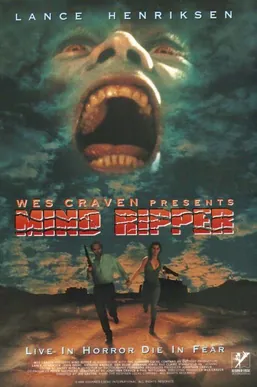

The genetics
The monster is the product of genetic engineering for military ends. Gentec's scientists keep a dying man alive with an engineered virus that makes his cells regenerate on their own, and, in collaboration with the US Army, push the experiment towards creating a supersoldier; higher doses given by the ambitious team leader Alex Hunter turn the subject into a mutating, nearly indestructible creature that feeds on human brain tissue. Dr. Stockton, who first used the virus to save the man's life, is the sympathetic scientist who quit when he saw the military direction of the work, and the film validates his misgivings through the carnage, while Hunter, who traps everyone inside to preserve his specimen, is the villain. It is a gory B-movie in the mould of Alien, and its regenerative virus is pure fiction.
How genetics is portrayed
- Overall portrayal of genetics
- negative Military genetic research produces a monster; the one decent scientist is the one who walked away, and the ending leaves the creature alive.
- Outcome of the genetic intervention
- negative The virus creates a murderous mutant who kills most of the facility's staff and is still alive at the end.
- Alex Hunter and the Gentec team
- villain Aim: military, curiosity (negative). The team leader pumps higher doses of the engineered virus into the subject to create a superhuman for the Army's supersoldier programme, then seals the facility to keep the creature for study; he is killed by it.
- Dr. Jim Stockton
- hero Aim: benevolent (positive). He used the virus to save a dying man and left the project when he discovered it was being turned into a supersoldier programme; he is the film's sympathetic protagonist.
The story
At Gentec, a secret underground research facility in the desert, a team led by Alex Hunter is trying to create a superhuman by reviving 'Thor', a man found dying after jumping from a cliff, with a genetically engineered virus that makes his cells regenerate. Dr. Jim Stockton, the military scientist who first used the virus to save the man, left the project after learning it was working with the US Army to breed supersoldiers. As he prepares a camping trip with his son Scott, his daughter Wendy and her boyfriend Mark, his former colleagues call for help: after Hunter increased the doses, Thor has gone berserk and killed two scientists. Stockton flies in with his family, but Hunter has sabotaged the exits to keep Thor for study. The mutating Thor, who extracts sterols from human brainstems with a pincer that grows from his mouth, kills Hunter and others. The survivors trap him in a freezer, escape with Stockton's handprint and shoot Thor off their plane; on the rocks, his hand twitches.